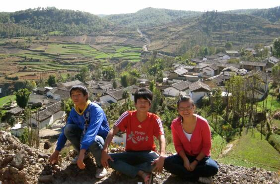
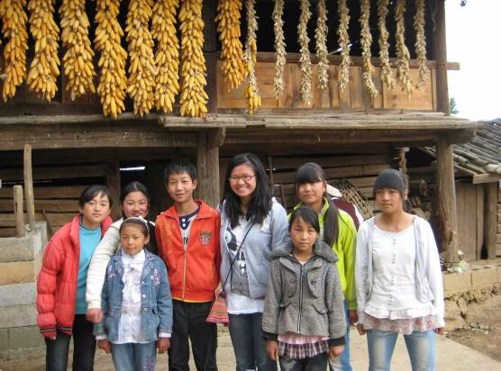
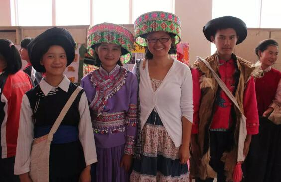
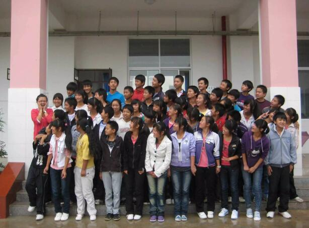

郝琳硕
哈佛大学毕业，经济金融学学士，国际教育政策硕士，年纪轻轻的郝琳硕堪称人生赢家。在别人眼里，她的前途十分光明：金融圈白领，收入不菲，奋斗华尔街，成为白富美。
然而对于人生，郝琳硕有着自己的规划和想法。她想得到更宽广的视野，找到真正的自己。“所谓更宽广的视野，并不是我看到了世界上最顶尖的技术或是先进的环境，而恰恰是看到了最纯粹的农村社会，看到当地人们的生活环境和精神世界。”
毕业后的郝琳硕，选择了美丽中国，选择到云南支教两年。是什么让她投身公益？这一路走来，她又经历了怎样的故事？
从纽约到云南
我的大四是交换在哈佛念的，毕业之际，误打误撞地和几个哈佛的同学以及北京大学的学生们组织了一个社会企业家论坛，邀请的嘉宾有世界银行，, 一些企业和基金会的代表以及来自北大清华的学者和教授等。那个论坛让我第一次深入了解公益组织，志愿者精神和社会影响力。
在周围的同学纷纷选择去投行或是金融机构工作的时候，我开始纠结是否要走上这条经济金融学出身的“老路”与“正路”。那一阵子我看到网上很多人发起给农村地区捐款捐物，这恰恰刺激了我的“商业头脑”：送孩子一件衣服，不如给她们一堂课，相比于物质，他们更需要一种可以一直拥有的理念和精神。而我，除了给她们一些物质上的支持，还能为他们做点什么呢？庆幸的是，2010年毕业之前我找到了答案，选择来到美丽中国—— 一个追求“让所有的中国孩子，无论出身，都能获得优质教育”的项目。

未去过乡村的我，从培训地点云南省临沧市作了8小时大巴来到鹤庆县县城，来到镇上的学校——云南省大理州鹤庆县松桂镇鹤庆二中。看着绵延的山脉，绿色的梯田，白色的房屋，袅袅炊烟，水牛耕地，再回想上个月还在纽约的繁华街巷喝着咖啡吃着最爱吃的三明治，有点兴奋，也有对未知的憧憬和不安。
我记得上课前一晚我的辗转反侧，第一次站在讲台上，看着学生们好奇的表情，更记得我第一次找学生谈话的那个孩子。他是个染着红头发、爱打架，也曾被劝退的男孩，那天他浑身散发着烟味。“你为什么不好好学习？哪里来的钱去染头发抽烟？”我气愤地责问他。从努力学习，到给家里人争气到将头发染回黑色，我一口气说了半个小时。
没想到一个星期后，他又开始挑头打架。我决定再找他聊一聊。
“你为什么要打架？”
“我害怕别人觉得我不够厉害。”他终于支支吾吾地说。
此刻我充满怒火的心一下子软了下来，原来一个外表假装强大的男孩子，是有如此的敏感和脆弱。我放弃了责怪与教导，送了一本《狼图腾》给他，希望他能领会狼的精神，正直、果敢才是真正强大的表现。之后的日子里，他像变了一个人似的，吃饭的时候总爱跑到我的宿舍和我聊天，作业也开始按时交了，甚至把头发也染回了黑色。
现在回想起来，我很庆幸那天的我用最温和的方式了解了他的脆弱，也让他懂得了什么是真正的强大。归底结底他们是还没长大孩子，不能用冰冷的教条去约束，而要用理解和关心去温暖。

渐渐地，我熟悉了我的学校：每天早上7:20的早读，孩子们还睡不醒，我就教他们唱英语歌；课间，学生们给我尝他们最喜欢的零食--酸木瓜条蘸辣椒粉。晚上晚自习9：45下课，我去女生宿舍跟她们聊天，上下铺十个小姑娘一间屋， 帮她们把被角掖好，跟她们说声晚安； 回到自己的宿舍，备课，判作业，画海报……也熟悉了松桂镇，路边卖米线的阿娘，县城每月3，6，9日子的赶集日。还学会听云南方言，每周末跟学生去家访，去当地老师家去做客，雨季跟着学生们上山去挖蘑菇，放羊，采松茅……
200小时的山路 40次家访
两年时间很快，要离开的日子越发临近，也越让我感到了时间的珍贵，想给学生留下的东西太多。不仅仅是成绩，还有一些能受益一生的东西。为此，我在一次班会中，要求大家写一段话给这一年来最想感谢的一个人，一个一个上台来讲，讲到最后大家都哭了。
这次感恩会让我最难忘的是那个会跳孔雀舞的14岁男孩，赵福根。
还记得我刚来到这里时，他的成绩是全班最后一名，而且平时几乎不和同学讲话。也正是他的安静，引起了我的关注。家访后我了解到，他小学时父亲过世，姐姐在昆明打工，他和妈妈住在叔叔家的房子里，家里只有椅子和灶台。
聊天中他的妈妈一句“他很喜欢跳舞”似乎让我看到了希望，回到学校后，我鼓励福根在学校“艺术节”上表演。每周二，我带着福根去找音乐老师一起编舞、排练。演出前，还特意去县城为福根借来了演出服。
比赛当天，福根表演的“孔雀舞”得了舞蹈组第一名！同学们齐喊着“福根”的名字，1700多名学生全部站起来鼓掌，没有鲜花，就拿糖果来代替。当满满的一大把糖握在手里时，他低着头腼腆地笑了。害羞的福根下台后跟我说：“我从来没有像现在这么自信！”
后来，他的作文《那天的舞蹈和掌声》得了全班最高分，他在作文中写道：“郝老师来到我家，那是第一次有老师来我家……她帮我学跳舞，告诉我能行……那天比赛，我永远忘不了那掌声，和同学们送我的糖，甜甜的。我感觉在学校也有人爱我了。谢谢你们，我爱的人。”
后记：郝老师在后来的教学中发现了要教好学生，就得要家庭的配合。在鹤庆二中的第一年，教的初二年级的学生有56名，郝老师走访了40多名学生家庭，平均一个学生家的家访时间来回差不多5小时，几乎走遍了松桂和西邑两个镇的所有村子。不少家长都说，郝老师是第一个到他们家家访的。
孩子们要走出去 还要想回来
长期家访后发现，村子里的年轻人都走了，只有老人和孩子留守。如果说教育改变命运，孩子的命运可以用知识改变，那大山的命运要怎么改变呢？如果他们出去不再回来，大山还是大山。我想不仅要让他们走出去，还要让他们想回来。
于是，我结合自己在国外接触到的教育理念和方法，发起了一项为期8周的研究型学习活动“让家乡的明天更美好”。通过考察当地情况、采访村里老人、团队讨论等方式，了解自己村里的历史以及存在的问题，并提出解决方案。展示那天，学生们通过演讲、小品、表演、实验等多种形式，向全校师生展示他们的方案。从学生们颤抖而洪亮的演讲词中，我听到了希望，也听到了属于这片土地的未来。

校长后来跟我说，这是他将近三十年的教育生涯里第一次见过的场景，让学生们在公众演讲，展示自己地调查的研究报告和解决方案，第一次发现山里的孩子可以这么自信。
评比第一名的小组如约获得去北京参观的奖励，去了故宫、长城、博物馆，和北大清华的学子做了交流。活动结束后，我们收到了很多参与这个活动的孩子们的感想。
吴池燕是个皮肤黝黑、聪明伶俐的女孩子，在鹤庆二中读初一。她在日记里写去中国国家博物馆的感受：“原来历史课本上的东西还能在博物馆里看到，将来一定要奋发读书，回来后改变自己的家乡。”
上初二的的施锡梅说：“以前，我总认为改变家乡是大人的事，与我无关。不过，现在我明白了，改变家乡，人人有责。我们要担起这份责任，为了家乡的明天，我们要尽最大的力量。”
后记：“让家乡的明天更美好”项目从发起至今，已连续举办四届，并由鹤庆二中一所学校推广到金墩中学、松桂小学和三庄小学，每届项目受益学生人数由1000多人增加到3000多人。这个活动，不仅影响到这些孩子对于学习的意识，更唤起他们对改变家乡的责任心。
未来 遥遥无期 两年 只争朝夕
回想支教的那两年，我想我不仅收获了更宽广的视野，更是明白了坚持和创造并重在生活里的重要性。
所谓更宽广的视野，并不是我看到了世界上最顶尖的技术或是先进的环境，而恰恰是看到了最纯粹的农村社会，看到当地人们的生活环境、精神世界。我的学生让我看到了一个人从社会一端到另一端需要去付出的努力，也让我有了一个可以从中帮助他们去实现梦想的机会。
坚持和创造力，其实可能这两件事情看起来并不相关，但我发现在解决问题的时候，坚持和创造力并行，反而更有收获。我发现学生的自卑和对学习的厌倦感时，我去家访、去了解他们的生活，尝试从源头去解决问题；举办“让家乡的明天更美好”给学生一个平台来提高农村孩子们对知识的运用、对家乡的了解。我真的希望这些想要走出大山的孩子们以后还惦记着家乡，为未来自己的家乡做点事情，有一种心念家乡的情怀。

现在的我选择了在世界银行IFC做发展中国家教育和医疗投资的研究和评估工作，是由于在美丽中国两年的经历给了我最大的财富，让我有在欠发达地区的亲身经历，有来自自身的动力来做对世界有意义的事业，影响和帮助更多人。
前几天我第一年支教时的英语课代表给我打电话，她今年高考，理科603分，9月份来北京上大学了。我一下觉得这两年真是什么都值了。
来到美丽中国，从初来乍到到依依不舍，两年里，让我真正找到了属于自己的价值，在看到带给孩子们的改变的同时，也收获自己内心的那份成长与成熟，我在这里找到了最真实和最好的自己。